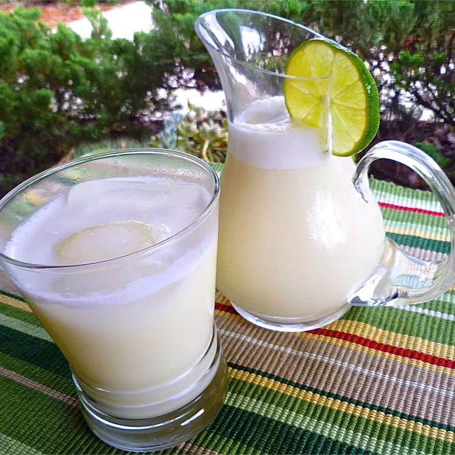

Go to Homepage
Brazilian Lemonade
This creamy lemonade drink is so good!

Prep Time:
10 minutes
Servings:
3
Total Time:
10 minutes
Ingredients
2 limes
3 cups water
½ cup white sugar
3 tablespoons sweetened condensed milk
1 cup ice cubes
Instructions
Wash limes thoroughly. Cut ends off and discard, then slice into about 8 pieces.
Place limes, water, sugar, and sweetened condensed milk in a blender. Pulse 5 times. Strain mixture through a sieve into a large pitcher. Serve over ice.